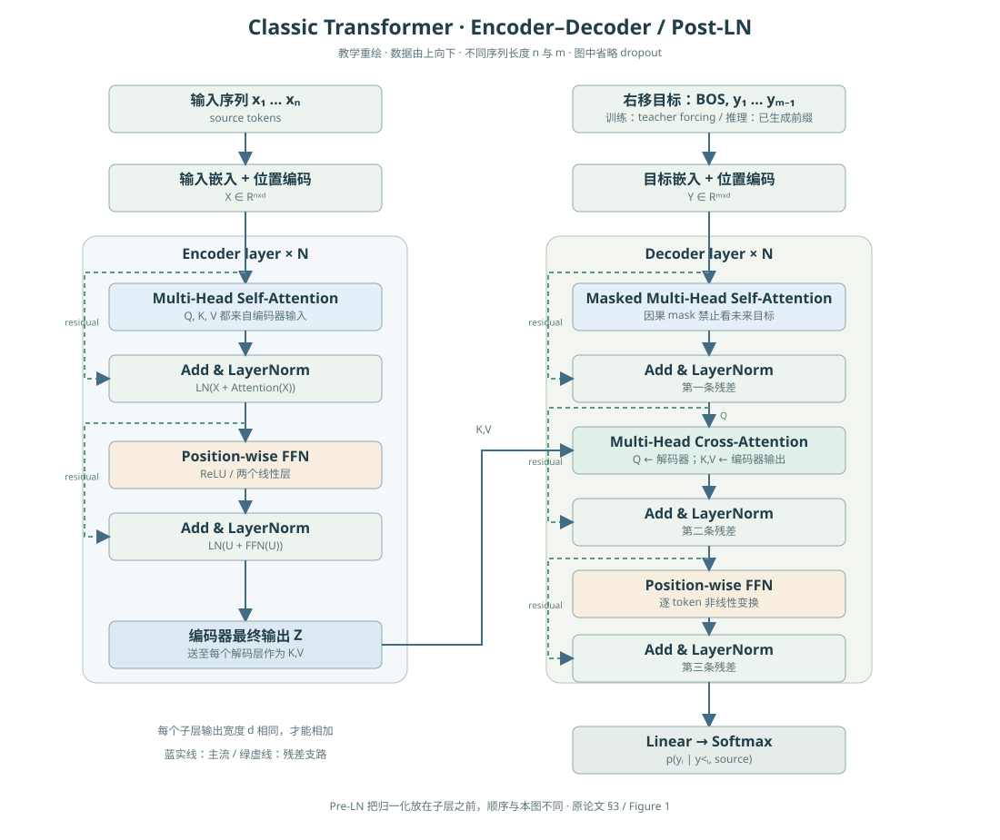

09 · 架构图与算法索引
本库所有架构与流程图均存成可离线显示的 SVG，点击图片可放大。每张图对应正文的维数、公式、流程和边界说明；图是教学重绘，而非截取论文图片。
1. 经典 Transformer

2. 具身系统：高层与低层的闭环

查看 Mermaid 图源码
flowchart TD S[传感 RGB-D / IMU / 关节] --> P[几何 / 语义感知] P --> B[信念状态 / 场景图 / 地图] I[自然语言目标] --> H[高层 grounding / 任务与技能规划] B --> H H --> L[低层策略 / 轨迹 / 动作块] B --> L L --> C[安全检查 / 高频控制] C --> E[机器人与环境] E --> S D[演示 / 预训练] -.训练.-> P D -.训练.-> L
离线训练箭头与在线信息流区分；状态估计会在任务执行中持续更新。详见具身学习。
3. 训练流程与部署流程

查看 Mermaid 图源码
flowchart LR subgraph TRAIN[动作扩散训练] A[观测动作窗口] --> N[随机扩散步与噪声] N --> P[条件去噪网络] P --> L[MSE 与梯度更新] end subgraph RUN[在线部署] O[新观测] --> Z[高斯动作初始化] Z --> D[多次反向去噪] D --> U[反归一化与安全检查] U --> E[执行短片段] E --> O end P -.网络参数.-> D
训练每样本选随机噪声步；部署遍历采样器的多步过程。H、H_e 和 K_d 的定义见第 06 章。
4. 空间导航与恢复

查看 Mermaid 图源码
flowchart TD
O[图像 / 深度 / 指令] --> P[定位 / 目标 grounding]
P --> M[占据地图与对象关系]
M --> C{目标置信与路径可行?}
C -->|否| V[主动观察 / 重定位]
V --> O
C -->|是| A[搜索路径 / 时间轨迹]
A --> E[控制执行 / 碰撞监控]
E --> F{达成目标?}
F -->|否| O
F -->|是| T[记录结果 / 终止]5. 正文图索引
| 图 / 算法 | 章节 | 配套说明 |
|---|---|---|
| 坐标链 / VAE | 01 | 变换求逆、ELBO、重参数化 |
| 注意力 / ViT / DDPM | 02 | 张量维数、mask、后验及训练目标 |
| IK / 规划控制 | 03 | 阻尼求解、停止条件、轨迹接口 |
| SLAM / NeRF | 04 | 残差、规范自由度、透射积分 |
| 场景图 / 空间闭环 | 05 | 关系概率、主动观察、信念更新 |
| Diffusion Policy / VLA | 06 | 条件注入、动作接口、重规划 |
| 资源核算 | 07 | 状态与激活估算、profiler |
| 评测流程 | 08 | 数据独立性、区间与失败归因 |
6. 交互式直觉实验
打开可调注意力、二连杆机械臂、空间参考系和资源估算。实验是解释公式的简化模型，不是性能 benchmark 或实机控制器。
来源与核验状态见 参考资料 · Markdown 源稿